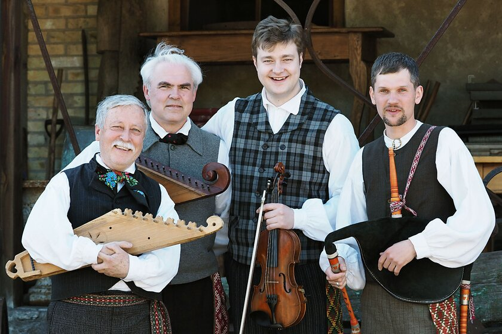
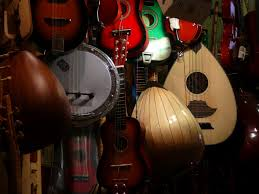

 |
It's a music genre that includes traditional folk music and the contemporary genre that evolved from the former during the 20th-century folk revival.In its 21st-century urban and institutional manifestation, folk music is normally performed by singers accompanied by stringed instruments, by instrumental ensembles, or by choruses. By contrast, in its traditional rural venues, most folk music is monophonic (that is, having only one melodic line). |
 |
Folk music is type of traditional and generally rural music that originally was passed down through families and other small social groups. Typically, folk music, like folk literature, lives in oral tradition; it is learned through hearing rather than reading. |